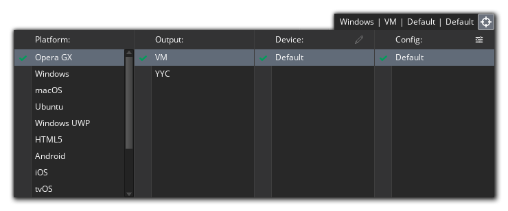
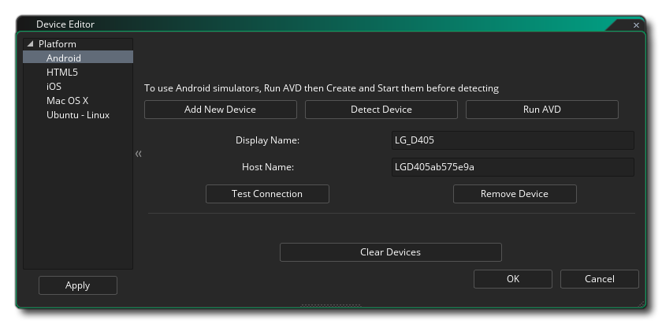
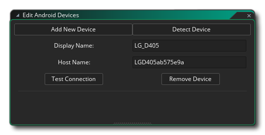
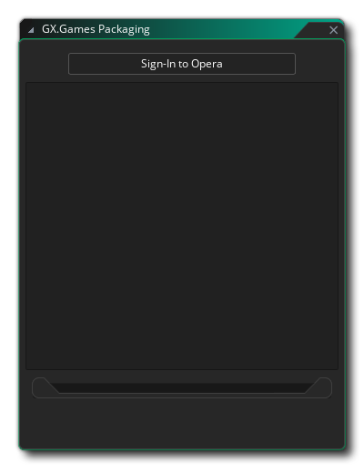
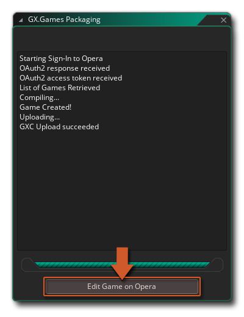
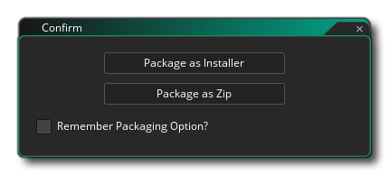
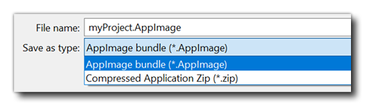
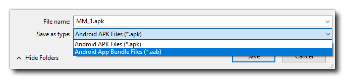
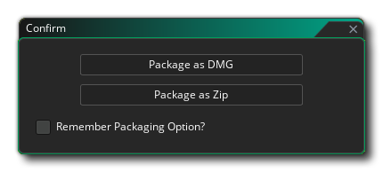
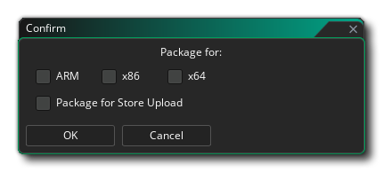

Compiling your game can mean one of two things: compiling it for testing, or compiling it to create a final executable package for a specific target platform. This page aims to explain both of those options in detail.
Compiling your game for testing can be done by simply pressing the Play button at the top of the IDE, which will launch the game for testing using the specified target. You can also run the game in Debug Mode by testing using the Debug button . This will run the game, but also open up the Debug Window, where you can monitor how your game performs and see any issues (see the section on Debugging for more information).
By default GameMaker will run and debug using the built in Virtual Machine (VM), which is more or less the same as running on the desktop OS being used. However GameMaker is a cross platform engine and you can test, debug and compile executable packages of your projects on a number of different target platforms (the exact platforms available will depend on the details of your licence). To change the current target platform you can click  on the Targets button to open the Targets Window, which will look something like this (exact details will vary based on your licence type):
on the Targets button to open the Targets Window, which will look something like this (exact details will vary based on your licence type):

At the top, beside the Targets button, you have the current settings which tells you the platform and the specific settings actually being used, and then the rest of the window is taken up with the details and options for all the available targets which you can select to use instead. Each section of this window is explained below:This section lists all the available target platforms. The contents of this list will vary depending on the licence you have, but will always have at least the "Opera GX" target. To select a target, simply click  on it; this will then update the rest of the options windows to show different details depending on the platform selected.
on it; this will then update the rest of the options windows to show different details depending on the platform selected.
Specific details on compiling for each platform are given in the "Creating A Final Executable Package" section below.
Each target platform can have one or more output formats, the main ones being:
Certain platforms (like iOS or Android) permit you to associate one or more devices with GameMaker so that games can selectively compile to them. Initially, the device list will be empty and you need to click  on the Pencil icon to open the Device Editor:
on the Pencil icon to open the Device Editor:

Here you can add new devices as well as have GameMaker test for a connection to any device(s) that may be connected. The exact contents of this window will depend on the platform specifics (see the section on the Device Manager for exact details for any given platform). Once a device has been found or added, it will then be shown in this window, like in this example image for Android:
The exact procedure and requirements for setting up devices and troubleshooting issues can be found in the appropriate section of the GameMaker Knowledge Base.As explained in the section on Configurations, you can store certain details for compiling your game as Configs. This section of the Targets window permits you to have GameMaker automatically select a specific configuration for a specific target platform.
There are also a number or preferences that can be set to modify and customise the compile workflow, explained on the following page:
You can simply click the Create Executable button in the IDE to start the compiler build or select Create Executable from the Build Menu. Either process will start the build process which will depend on the target platform selected.
On the Opera GX target, it will open a special window allowing you compile and upload your game to GXC; on all other targets it will open a file explorer window where you can give the final name that you wish to use for your game executable, before clicking Save to start the compile and build process. Once you have done this, the necessary files will be generated so that you can distribute it as you wish.
For certain platforms, compiling your game project will require that you have set up the correct build tools (see here) and also filled in the appropriate Platform Preferences.
Depending on your licence, you may have the option to build your game via command line, allowing you to set up continuous integration for your project and streamline your building and testing process. See this page for more information on command line building.
NOTE Before doing a final build of your project for release, you should always clear the Asset Compiler Cache (using the "broom" icon at the top of the IDE). GameMaker will cache many of your game files to keep compilation speed to a minimum and these can sometimes get corrupted, so it is safer to clear that cache before doing a release build.
The maximum size of the final game package is 4GB, except for 32-bit Windows, where it's 2GB. See tips for reducing the final game size.
Each target option saves to a platform specific format, listed below:

Note that you will not need to sign in here if you have already signed into GameMaker using your Opera account.
Please refer to this page on the YoYo Games Helpdesk to learn more about the Opera GX upload process, and this page for information on setting up the YYC export for GXC.
If you check the box marked Remember Packaging Option then GameMaker will remember the choice for all future compiles (this can be reset or changed from the Windows Preferences). You can find out more from the YoYo Games Help Center. Please note that the Windows target can compile 32bit or 64bit executables depending on what you have selected in the General Game Options. We strongly recommend that all new projects use the x64 Runtime to create 64bit executables as the 32bit runtime will be getting deprecated and removed in the future.
.AppImage is useful for sharing as a package via any distributor, while .zip is used for uploading to Steam (as it uses the Steam Runtime specifically).
The type of file you choose will depend on the store that you wish to target, with the *.aab file being required for Google Play, while the *.apk file can be used on other stores. You can find out more from the YoYo Games Help Center.
"Package as DMG" will build a .dmg installer package which can be used to install the game on a Mac computer. Note that during this build process you will see the installer appear on the Mac, which will disappear once the build process is complete.
If you check the box marked Package For Store Upload, then the final package created will be an *.appxupload file, which is what Microsoft specifies should be used for submitting apps to their store, as explained in this article here (all chosen architectures will be included, just like with the *.appxbundle). You can find out more about setting up and compiling to UWP platform from the YoYo Games Help Center.Once you have created your executable asset package you can then give the file to other people or place it on your website to download, or upload these files to the different hosting services for individual distribution or even to online stores (like Google Play, Apple App Store or the Microsoft Store) for general distribution and retail.
Note that you are free to distribute the games you create with GameMaker in any way you like, including selling them. Of course, this assumes that the sprites, images, and sounds you used to make it can be distributed or sold as well and that you have the legal rights to all assets, and it also assumes that the game complies with the YoYo Games EULA for GameMaker.